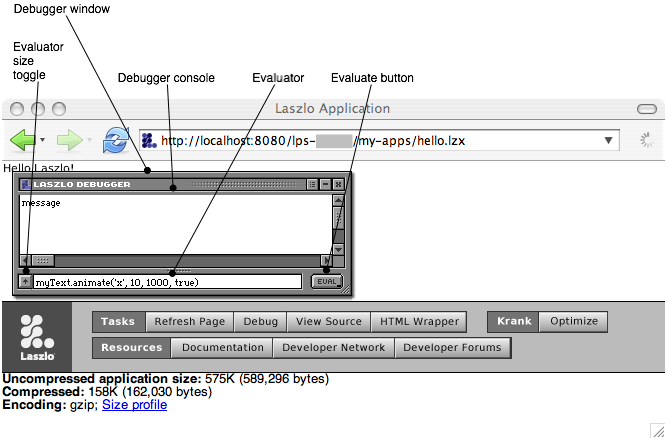
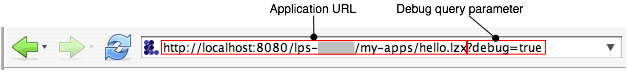

Debugging
Using the Debugger
When you run an application with debugging enabled, the application
is compiled with instrumentation to detect runtime errors, and the
debugger window appears within the application canvas. The debugger
provides these features:
- The top portion of the debug window displays a scrolling list of
debug messages. These include warning messages that the OpenLaszlo Runtime Library displays, as well as the arguments to calls to the Debug.write.
- The command-line portion of the debug window can be used to
evaluate JavaScript statements and expressions within the context of
the running application. Use this to inspect the program state, to
test the behavior of functions and methods on various arguments, and
to explore the LZX API.
- Warnings for runtime errors such as undefined variables and
functions are detected, and printed to the debug console.

<canvas height="150" debug="true"/>
Debugging may cause the application to run more slowly, even if
the debugger window is not visible.
Enabling the Debugger
There are three ways to turn on the debugger in your application:
- The debug attribute
The debugger is enabled on if the canvas debug attribute is set to true:
<canvas height="150" debug="true"/>
- The "Debug" button
Press the "Debug" button on the developer console to request a copy of the application with debugging enabled. This is equivalent to recompiling the application with the debug="true".

- The
debug query parameter
Edit the URL that is used to request the application to include
the debug=true query parameter.
This is equivalent to pressing the "Debug" button in the developer
console.

See theSystem Administrator's Guide for more information
about request types.
<include href="debugger"/>
Add the line <include href="debugger"/> to your source file to include the debugger component.
<canvas height="150">
<include href="debugger"/>
</canvas>
Unlike the other methods for turning on the debugger, this method does not turn on runtime error checking (). It only includes the debugger component.
Runtime Error Checking
Enabling the debugger ?> has two effects:
- It includes the debugger visual component. This displays debug messages, and has a command line interface for evaluating JavaScript statements.
- It compiles the application with additional instrumentation to perform runtime error checking. Certain classes of erroneous code (below) result in warnings that are logged to the debug window.
A program that is compiled with runtime error checking will contain code that checks for the following conditions:
| Condition |
Example |
Notes |
| Reference to undefined variable |
var w = canvs.width |
canvs is not defined. (There is a global
variable named canvas, instead.) |
| Reference to undefined property |
var w = canvas.widt |
canvas does not have a widt property. (The name of the property is canvas.width.) |
| Call to undefined method |
LzBrowser.getVerson() |
LzBrowser.getVerson (with no "i") is not defined. |
| Call to undefined function |
var n = parseInteger("123") |
parseInteger is not defined. (There is a JavaScript function parseInt.) |
| Call to non-function |
var w = canvas.width() |
canvas.width is a Number,
not a Function. |
Each runtime exception warning is printed once per line per program run, not once each time the exception is encountered. The following program will print one warning, not ten.
<canvas debug="true" height="150">
<method event="oninit"><![CDATA[
for (var i = 0; i > 10; i ++) {
canvas.width();
}
]]></method>
</canvas>
Turning on runtime error checking makes an application bigger
and slower. You should only perform size and speed optimization on
the non-debug version of a program. Nonetheless, you will frequently
want to run the debug warning to see whether you have introduced any
runtime errors.
Logging to the Debugger
The top portion of the debugger window is the debugger
log. Use Debug.write to print to the debugger
log. This method is variadic: it takes any number of
arguments. The text representations of the arguments are printed
to the debugger log, separated by spaces.
<canvas debug="true" height="150">
<script>
Debug.write('user code');
</script>
<button onclick="Debug.write('click', getMouse('x'))"/>
</canvas>
Some object are inspectable. See for more about the inspect feature of
the debugger. See to see
how to customize the display of objects within the debugger.
Using the Evaluator
The bottom portion of the debugger window is the
evaluator. This is a command-line interface for evaluating
JavaScript expressions and statements within the application. Enter a
JavaScript statement into this area and press the Enter key (in
single-line mode) or the Evaluate button (in multi-line mode) to
evaluate the statement within the application. If the statement is an
expression, its result (if the result is not undefined)
is printed to the debugger log. If it is a statement but not an
expression, it is executed for effect.
Examples of expressions are canvas.x,
1+2, and
LzBrowser.LoadURL('http://www.laszlosystems.com/',
'_blank'). (The last expression returns the value
undefined, so the debugger does not print the expression
value in the debugger log.) An example of a non-expression statements
is for (int i = 0; i < 10; i++) Debug.write(i). This
is evaluated for effect, and the statement itself does not result in a
value, although each execution of the loop prints the value of
i to the debugger log.
The debugger can be used to define global variables. Use the
var keyword to define a new global variable. For
example, after evaluating var n=100, evaluating
n+1 will print the value 101.
The var keyword is only necessary to define
new global variables. You do not need it to change the value
of existing variables. For example, after evaluating var
n=100, you can evaluate n=200 to change the value
of n. You do not need to evaluate
var n=200 (although the extra var
is harmless.)
You can also use var to create new global functions.
var f = function (x) {return x+1} creates a new function
named f, which can be used in subsequent
expressions such as f(1).
Functions and Expressions
Consider the following debugger evaluations. Notice that the second case is terminated with a semicolon; otherwise the expressions are identical:
lzx> function foo () { return 'Fu'; }
Function#0| foo
lzx> foo
WARNING: interactive-eval-2:-1: reference to undefined variable 'foo'
lzx> function foo () { return 'Fu'; };
lzx> foo
Function#2| foo
In the first case, a function named 'foo' is created, but it is not the value of the global `foo`. Instead the Debug evaluator returns a value which is that function object. In the second case, the evaluator does not return a value, and the global `foo` is defined to be the function. Why is that?
The answer is that the debugger evaluator will first try to evaluate what you type as an expression, and if that fails, it will try to evaluate it as a statement. The second form is clearly not an expression (think of what you type as having parentheses around it—the semi-colon forces the second form to be a statement list, with an empty second statement). This distinction, although subtle, is correct ECMAscript semantics. It is not whether you name a function or not that determines when a global definition will be made; rather, two things must be true:
- the function must be named, and
- the function declaration must occur in a statement context.
If the function declaration occurs in an expression context, all you have done is to create a named function object as the value of that expression, you have not defined that name as the function.
Therefore, if you ever wonder why when you define a function in the debugger it does not behave as you expect, take a clue from what the evaluator prints out: if it prints out a function object, all you did was create a function, not define a function. Add the semi-colon after your definition and you will define the function (and not see a value printed).
Explain the single-line and multi-line mode of the evaluator
Screenshot
Debugger Variables
Within a debugger expression, _ refers to the value of
the previous expression. For example, after evaluating
canvas.width to display the width of the canvas, you can
evaluate the expression _/2 to display half this
width.
The debugger defines the following variables:
_- The result of the previous expression with a non-undefined value.
__ [two underscore characters])- The result of the expression prior to the previous expression.
___ [three underscore characters]- The result of the expression prior to the
__ expression.
Inspecting Objects
Evaluating Debug.write(object), where
object is an expression that evaluates to a
JavaScript object, displays an inspectable representation
of the object in the debugger. Clicking on an
inspectable object displays its non-private properties and their
values. Those values which are objects are also displayed as
inspectable objects, so that they can be clicked on as well.
An object's private properties are those whose names begin with $ or ___ (three underscore characters). These names are used by the compiler and by the OpenLaszlo Runtime Library implementation, respectively, and are not part of the documented API for the object.
An inspectable object can be an OpenLaszlo Runtime Library object such as a
window or LzDataset, or a built-in JavaScript
object: for example, an array such as [1, 2, 3], or a
Object such as {a: 1, b: 2}.
The Debug.inspect function also displays the object and
its properties. Evaluating Debug.inspect(object) is
equivalent to evaluating Debug.write(object) and
then clicking on the object's representation.
Debug.write behaves differently depending on whether its argument is a string or a non-string object. Note the difference between the two calls to Debug.write in the example below.
<canvas debug="true" height="150">
<method event="oninit">
Debug.write('subviews: ' + canvas.subviews); The (only) argument to Debug.write is a string, so the value of canvas.subviews is not inspectable.
Debug.write('subviews:', canvas.subviews); The second argument to Debug.write is an non-string Object, so it is inspectable.
</method>
</canvas>
Conditional Compilation of Debugging Code
Sometimes you may have computations that you need to make only when you're debugging an application. For example, you may include some time stamps in order to measure performance of certain sections of code.
The best practice here is to enclose any debug-only computations in
if ($debug) {
...
}
The compiler will omit those statements when you compile without debugging.
Configuring the Debugger
Debugger Window Position
By default, the debugger comes up over the top left corner of your
application. You can change the basic properties of the debugger by
including the debug tag in your app, like this:
<debug x="100" y="100" height="500"/>.
Note that this does not enable the debugger; it merely
configures its appearance when the debugger is enabled. You still
have use one of the methods in to enable debugging. The
effect of this is that you can leave the debug in
your program at all times (including in production code), and it will
only have an effect when debugging is enabled.
Customizing Debug.write
Debug.write displays the printable representation of an object. Where possible, the representation of an object is what you would type to represent that object in a program. This is the case for instances of Singleton types (types with only a single instance, e.g., Undefined and Null) and for instances of Atomic types (types whose members have only a single value, no properties; e.g., Boolean or Number). Instances of Strings are normally not presented in this fashion (i.e., they are not quoted), as usually they are either a message or formatting. Instances of compound types (types with properties, e.g., Array and Object) and Strings that are longer than Debug.printLength are printed in inspectable format:
«type(length)#id|name»
where:
- type
- is the type of the object, as computed by Debug.__typeof. You can customize this field by defining a
String-valued property _dbg_typename or a method yielding a String of the same name on your class
- length
- is the length of the object, if it is of a type that has a length, such as Array or String
- id
- is a unique identifier that can be used to visually distinguish objects whose printed representation may be the same but which are not in fact the same object
- name
- is a descriptive name of the object, as computed by Debug.__String. You can customize this field by defining a
String-valued property _dbg_name or a method yielding a String of the same name on your class
By default an object is described by
its properties, a function by its name (if available).
Descriptions and Strings are abbreviated to the first
Debug.printLength characters. This property defaults to
1024. You can see all the properties of an abbreviated
object, or all of a string by inspecting it (but take care to check
the length of the object — it may take a very long time to
print if it is large).
When the debugger prints an object, if the type part of the description is enclosed in ?'s, it means that the object is potentially corrupted. (Technically it means that object instanceof object.[[prototype]].constructor is not true.)
Logging to the Server
Messages can be written from an LZX application to the
server log through the use of the
debuglog=true query parameter and the Debug.log
method.
Examples
See the System Administrator's Guide to Delpoying OpenLaszlo Applications for information about configuration
and reading the server log.
Formatting Output
The debugger has capabilities for formatting output according to control strings.
Using 'printf' conversions
Debug.formatToString produces formatted output to a string, formatting its arguments according to the control string:
- The standard printf conversions are accepted, with the exception of a, n, and p.
- e, f, and g conversions are accepted but equivalent to f.
- The h and l length modifiers are accepted but ignored. No errors are signalled for invalid format controls or insufficient arguments.
There is an additional format specifier w that formats the argument as if by Debug.__String with the 'pretty' option and creates a 'hotlink' so the object can be inspected. If alternate format is requested (#), w uses the full Debug.__String format used by Debug.write. w format obeys Debug.printLength, binding it to the maximum width, if specified in the control string.
Printing 'single-escape' characters
When the debugger prints a string and Debug.printPretty is false, it will escape all the SingleEscapeCharacter's in the string (i.e., ' " \ b \f \n \r \t \v). For example:
Debug.format('%#w', 'This is a "test"\nS\bring') ->«string#6| "This is a \"test\"\nS\bring"»
On-the-fly type conversions
The %d, %u, %i, %o, and %x directives (and their capital
variants) cast their arguments to the type Number before formatting
them. The %s directive casts its argument to a String. There is no
default precision for these format directives —they will
print the fractional part of non-integers by default. If you
require that they round to the nearest integer, you can use
%.0d. If passed an argument that cannot be coerced to a
Number, these format directives print `NaN` (Not a Number).
Inspecting Warnings and Errors
Warnings and Errors are 'inspectable'. If you click on them, you will inspect the warning or error object. If backtracing is enabled, a backtrace will be one of the properties of the object that you can inspect. Inspecting the backtrace will reveal the recorded stack frames which record: the function called, this and the arguments to the function.
Monitoring object properties
Debug.monitor(who, what): Takes an object and property name
and will emit a 'monitor message' each time that property is
changed.
Debug.unmonitor(who, what): Turns that off.
A monitor message consists of a timestamp, the function that caused the change, the object and property, and the old and new
values. E.g.:
MONITOR: [69227.23] LzLoader.initializeRequestObj: «LoadMovie#0| __debugger.lzx (loaded)».valid: true -> true
MONITOR: [69265.36] LzLoader.initializeRequestObj: «LoadMovie#0| __debugger.lzx (loaded)».loaded: true -> false
MONITOR: [69317.96] LzLoader.initializeRequestObj: «LoadMovie#0| __debugger.lzx (loading)».loading: true -> false
MONITOR: [69378.19] LzLoader.initializeRequestObj: «LoadMovie#0| __debugger.lzx (initialized)».timedout: false -> false
MONITOR: [69436.51] LzLoadQueue.makeRequest: «LoadMovie#0| __debugger.lzx (initialized)».loading: false -> true
MONITOR: [69702.58] LzLoader.returnData: «LoadMovie#0| __debugger.lzx (loading)».loaded: false -> true
Tracing and Backtracing
The debugger provides methods that allow you to see interactions between parts of your application.
Tracing
When you invoke the debug.trace(), the debugger traces the named method of the object and prints a message to the Debug console each time it is called or returned from. When called, the message includes a timestamp, the name of the function and the arguments it was called with. When returned from, the message gives the name of the function and the value it returned (if any). If backtraces are enabled, inspecting the message will reveal the call chain that caused the modification.
Backtracing
The configuration parameter compiler.debug.backtrace, when true, causes the compiler to instrument functions to maintain a call stack. You must recompile both the OpenLaszlo Runtime Library and your program if you change the setting of this parameter. It defaults to false because there is significant overhead introduced in enabling backtracing; in general it is only useful on small test cases.
The configuration parameter is set in the configuration file lps.config , as explained in the System Administrator's Guide.
To create your own backtrace at any time:
Debug.backtrace()
There is an optional argument that is the number of frames to skip in creating the backtrace.
If you print a backtrace using Debug.write, it may be abbreviated, but clicking on it will reveal the full backtrace.
Debugger warnings will automatically include a backtrace. A backtrace snapshot can created by Debug.backtrace(). A backtrace is a subclass of array, converting it to a string will create a trace from innermost to outermost call, inspecting it will reveal the actual function objects that make up the array.
To get the full backtrace out of a debugger warning, you need to use:
__LzDebug.ObjectForID(NN)
Where NN is the object ID of the backtrace object, and then click on the resulting object to see the full trace.
Finding "memory leaks"
A running OpenLaszlo application allocates parts of available virtual memory to store objects. When these objects are no longer needed the memory should be released by the application in order to become once again available for other use. Sometimes unneeded memory is not properly released, in which case the application tends to slow down over time as less and less memory becomes available. This is "leaking memory." The OpenLaszlo debugger can help you find memory leaks.
Three methods on __LzDebug are used to find leaks:
- markObjects()
- findNewObjects()
- whyAlive()
You use them in that order. Typically, you will start up your program, run it for a bit until you think it has reached a steady state. Then invoke __LzDebug.markObjects(). This runs in the background and will mark all the objects that are currently in use. When you see the output '''Trace Done''' you can move on to the next step.
You exercise your application in a way that you expect not to result in any retained storage (or some small amount of retained storage). Run __LzDebug.findNewObjects(). This also runs in the background and will find any new objects that have been allocated since the markObjects call that have not yet been garbage-collected. When you see the output '''Trace Done''' you can move on to the next step.
Call __LzDebug.whyAlive(). This returns a ''leak list'', which you can call .toString() on to see ''<why> (<size>): <what>'' pairs. ''<why>'' is the shortest path from _root that is keeping the object from being collected; ''<size>'' is a count of the slots in that object and all its descendants, which is a rough indication of the cost of the object; ''<what>'' is the debugger representation of the object. You may want to set Debug.printLength to a larger value before converting to a string. You can also inspect the ''leak list'' to see the objects that have been retained.